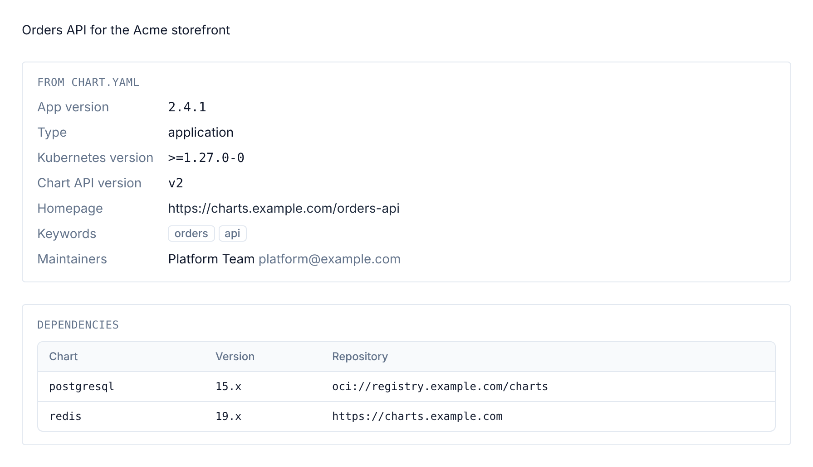

Helm repositories are classic chart repositories: an index.
Charts kept in OCI registries (helm push oci:/
1. Add the repository
helm repo add depotex https://depotex.example.com/repository/my-space/helm/ --username me --password "$DEPOTEX_TOKEN"
helm repo update
helm search repo depotex/
helm install demo depotex/my-chart --version 1.0.0With a Helm group as the space's default, https:/
2. Publish a chart
Package the chart, then upload it with Publish permission, either with a PUT of the file or as ChartMuseum and the helm-push plugin do (POST api/
helm package ./my-chart
curl -f -u "me:$DEPOTEX_TOKEN" --upload-file my-chart-1.0.0.tgz https://depotex.example.com/repository/my-space/helm/my-chart-1.0.0.tgz
# or, with the helm-push plugin
helm cm-push my-chart-1.0.0.tgz depotex- The archive is checked: one top-level folder with a Chart.
yaml (apiVersion v1 or v2, a name and a SemVer version), and its name and version must match the file name (my-chart-1.0. ).0. tgz - A provenance file (my-chart-1.
0. ) uploaded next to the chart is served for helm verify and helm install --verify; with POST api/0. tgz. prov charts , send it in a form part named prov beside the chart part. - A version can't be replaced once published: every index that lists it pins its digest. New Helm repositories publish once.
- index.
yaml is generated from the charts published, with each version's digest, and can't be uploaded. Delete a version with DELETE api/charts/ (Delete permission), as ChartMuseum does.<name>/ <version>
3. Versions and policies
- Each chart version is a version in Depotex: it shows in the Versions tab, and cleanup policies, quotas, quarantine and the block list apply to it.
- Block-list ranges compare chart versions by semver, with or without a leading v.
- Blocked versions are left out of index.
yaml and their archives refused; quarantined versions too when the repository hides them.
4. Proxy repositories
Add an upstream with the Bitnami Helm charts preset (https:/
Chart repositories often host their charts somewhere else, such as GitHub releases. Depotex fetches charts from the index's own server, or from another server only by host name over HTTPS: links to IP addresses, localhost or single-word host names are refused, so an index can't point Depotex at your internal network. The upstream's credentials are only sent to its own server.
5. In the artifact browser
Charts show by name, then their versions. The Install bar shows helm install for the version, and Registry setup shows helm pull.
A chart version's Overview shows what its Chart.
A provenance file uploaded with its chart shows on the version page as a signature, Helm provenance, when it names that chart and the chart's SHA-256. Depotex doesn't check the PGP signature against a keyring: use helm verify or helm install --verify for that. Charts uploaded before 2026-11-20 show it after Re-inspect in the version's menu.

6. Limits
- Charts pushed with helm push oci:/
/ live in a Docker repository and don't appear in a Helm repository's index.… yaml : install them with helm install oci:// , and publish charts meant for helm repo add to a Helm repository.… - Provenance files are stored and served, not checked: helm verify checks them on your side.
- The browser doesn't show Chart.
yaml details or chart dependencies yet.